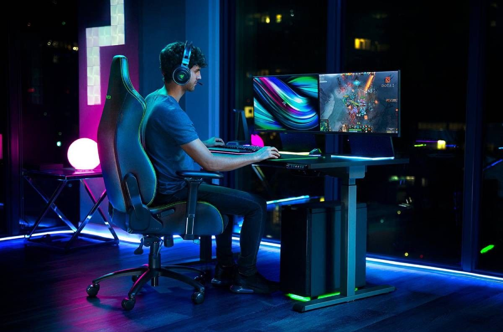
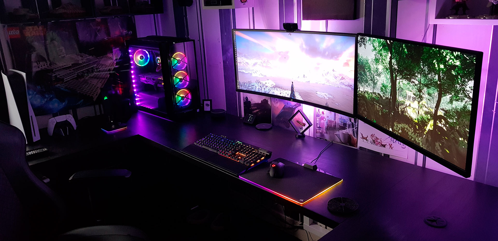

creando un SETUP
Disfrutar de un buen juego, va mucho más allá de la experiencia de ganar o perder, y es que no se trata del setup más caro o de la habitación más producida, sino de tener ese espacio con el que tanto soñaste desde que Mario era tu juego favorito... Simplemente imagina que al tener un mal día en el trabajo puedes llegar a casa y disfrutar de una buena partida online con tus amigos, desde el mejor espacio del mundo, tu setup gamer; es una razón para llenarnos de energía. Quiero que dejes de imaginarlo y nos pongamos manos a la obra en la construcción de tu propio cuarto gamer con todos los juguetes y accesorios ¿Te unes?
Escritorio
Equipo Pc

Perisféricos

Comodidad

Ambientación
Escritorio
Debes tener estabilidad para una mejor experiencia, no queremos estar preocupados por si la PC o el monitor se está moviendo demasiado y peor aún tener accidentes de caídas o cosas por el estilo. Puedes utilizar el escritorio que tenías en casa para hacer tus tareas y darle un toque más geek, o si en definitiva quieres renovarlo.
Equipo
De lo más variado que podemos encontrar en un setup, el equipo con el cual trabajamos y jugamos. Podemos escoger team AMD o INTEL, cualquiera de los dos estan perfectos para tener una experiencia adecuada al frente de nuestro monitor. Dependiendo de los trabajos que realizamos en nuestra pc sera la elección de componentes a elegir. Comenzamos con la elección de un mother, el microprocesador, la ram, los discos, una fuente y finalmente un gabinete.
Perisféricos
Los accesorios no pueden faltar. Nada más incómodo que un teclado que se trabe en plena creación de código, y es que una tecla mal aplastada puede cambiar todo el desenlace de la experiencia al frente de uan Pc. Los teclados mecánicos son los mejores a la hora de jugar, creeme que cuando pruebes uno, no querrás ni escribir un mail con un teclado tradicional.
Ahora hablemos del Mouse, la ventaja de los nuevos modelos es que cuentan con un montón de botones que nos dan ciertos atajos en cada juego, además de que evitamos el molesto dolor de mano que todo gamer sufre en algún momento.
Escuchar como si de verdad estuvieras dentro del juego es increíble o bien dentro del estudio de grabación del tema que estas escuchando. No olvides que el uso de Auriculares de mala calidad o estropeados, pueden afectar a tu audición a largo plazo. No te arriesgues y opta por unos que realmente cambien tu experiencia y no te causen molestias o incomodidades. Hemos llegado a lo que quizá es una de las piezas más importantes para disfrutar de la experiencia al frente de un buen setup, los Monitores, televisores o smart TV, pueden elevar al cien por ciento el disfrute y la realidad de una buena imagen. Si vas a programar la verdad que con cualquier monitor de 60Hz y que sea en lo posible de resolucion 1080p estaria más que bien. ahora si mechas tu tiempo entre Programar y Jugar a video juegos lo más conveniente sería saltar a un monitor de 144hz (sobre todo en los shooters), con panel TN si queremos que tenga 1ms de respuesta o bien con panel IPS que son los paneles mas coloridos que los anteriores pero con más ms de respuesta.
Escuchar como si de verdad estuvieras dentro del juego es increíble o bien dentro del estudio de grabación del tema que estas escuchando. No olvides que el uso de Auriculares de mala calidad o estropeados, pueden afectar a tu audición a largo plazo. No te arriesgues y opta por unos que realmente cambien tu experiencia y no te causen molestias o incomodidades. Hemos llegado a lo que quizá es una de las piezas más importantes para disfrutar de la experiencia al frente de un buen setup, los Monitores, televisores o smart TV, pueden elevar al cien por ciento el disfrute y la realidad de una buena imagen. Si vas a programar la verdad que con cualquier monitor de 60Hz y que sea en lo posible de resolucion 1080p estaria más que bien. ahora si mechas tu tiempo entre Programar y Jugar a video juegos lo más conveniente sería saltar a un monitor de 144hz (sobre todo en los shooters), con panel TN si queremos que tenga 1ms de respuesta o bien con panel IPS que son los paneles mas coloridos que los anteriores pero con más ms de respuesta.
Comodidad
La silla es tu trono. Si lo que quieres es pasar un tiempo de relax jugando o trabajando, es importante que tu postura sea la adecuada, no hay nada peor que terminar un dia de trabajo todo dolorido por una mala postura. La silla, sea gamer o no, debe tener el soporte y la suavidad suficiente para que te concentres únicamente en tus tareas y no en estar pensando en tu espalda o cuello. En cuanto al relleno de las distintas sillas es fácil dejarse llevar por las apariencias, pues existen cientos de sillas por todos lados que se ven extremadamente cómodas, pero al pasar de unos meses, su relleno se deforma y terminas sintiendo toda su estructura a la hora de sentarte. Verifica siempre que su relleno sea de esponja de alta densidad y alto rebote. Por su parte la inclinación es importante y que silla tenga cierto grado de inclinación para que te acomodes de modo que puedas ver la pantalla independientemente de dónde esté colocada esta. Su apoya brazos y cuello Tu cuello y brazos no deben quedar en el aire para evitar molestias y calambres, cuando estés en busca de tu silla, procura que tenga los apoyadores esenciales.
Ambientación
En cuanto la ambientación caemos en un terreno de lo más variado, algunas personas ni les interesa y a otros es lo primero que hacen luego de tener armada su Pc. Algunos cuadros, figuras de acción y tira de leds, paneles de luz etc. Todo dependera si quieres darle estilo al lugar donde seguramente estas sentado la mayor parte del dia y porque no, la noche.